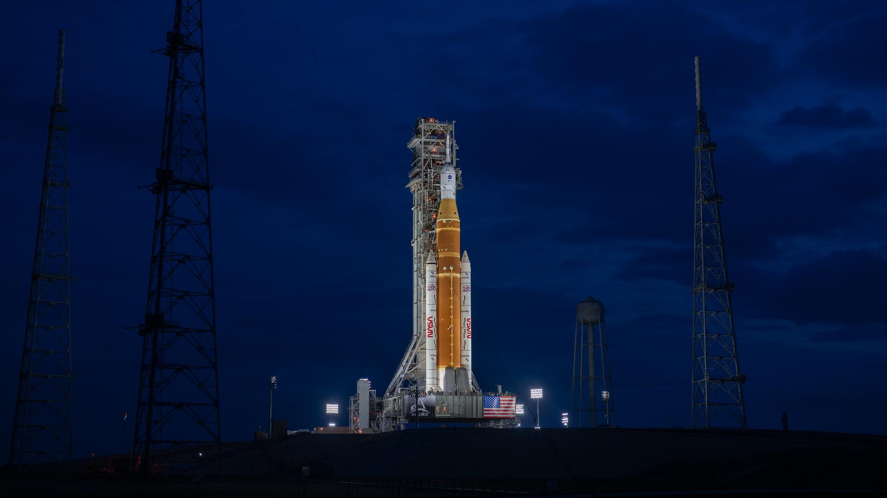

Artemis II se prepara para el regreso tripulado a la órbita lunar
La misión de la NASA marcará el retorno de astronautas a las cercanías de la Luna después de más de cinco décadas, en un paso clave hacia futuras exploraciones tripuladas. El lanzamiento está previsto para los próximos años y pondrá a prueba sistemas esenciales para misiones más ambiciosas. La tripulación realizará un sobrevuelo lunar sin alunizaje, validando tecnologías críticas para el programa.
Ver másAvances en inteligencia artificial transforman el entorno laboral
Nuevas herramientas basadas en inteligencia artificial están automatizando tareas complejas y redefiniendo el trabajo digital en múltiples sectores. Empresas y profesionales adoptan estas tecnologías para mejorar la productividad, aunque crecen los debates sobre su impacto en el empleo. Expertos señalan que el desafío será equilibrar innovación y adaptación en los próximos años.
Ver másRécords de temperatura generan alerta a nivel global
Diversas regiones del mundo registran temperaturas extremas que preocupan a la comunidad científica y a organismos internacionales. Los especialistas advierten que estos fenómenos están vinculados al cambio climático y podrían intensificarse en el futuro. Gobiernos y organizaciones analizan medidas para mitigar sus efectos y proteger a las poblaciones más vulnerables.
Ver másLa economía global muestra señales de recuperación moderada
Indicadores recientes reflejan una recuperación gradual en distintos mercados, impulsada por el consumo y la estabilización de precios. Sin embargo, persisten incertidumbres vinculadas a la inflación y a los conflictos internacionales. Analistas sostienen que el crecimiento será desigual entre regiones y dependerá de las políticas económicas adoptadas.
Ver más